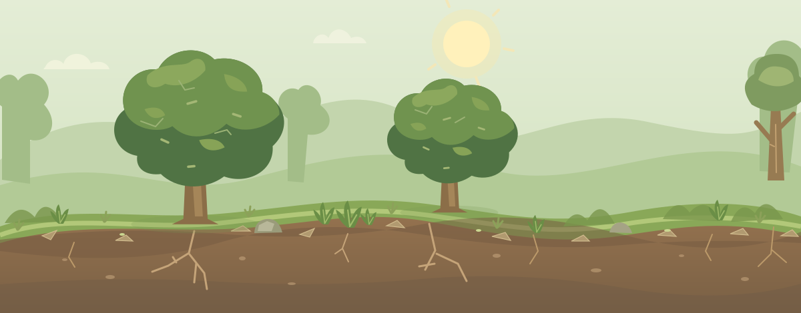

4학년 과학 · 생물과 환경
관찰 준비
0 P
2종
맑은 숲

카드를 고르고, 숲을 터치해요.
햇빛·물·공기·토양처럼 생물이 아닌 환경을 비생물 요소라고 해요. 비생물 요소는 생물의 생활에 영향을 줘요.
지금 진행 중인 환경 사건은 없어요. 생물과 환경의 상태를 계속 살펴봐요.
햇빛·물·공기·토양은 식물의 성장과 먹이 회복에 영향을 줘요. 공기가 나쁘면 동물도 천천히 움직여요.
물·햇빛 부족과 나쁜 토양은 식물의 회복에 불리해요. 관리 결과는 기존 생태 규칙에 따라 서서히 나타나요.
관찰하고 배운 내용을 숲에 적용해 보세요.
첫 목표를 해냈어요. 숲의 변화는 계속돼요.
현재 숲과 학습·발견·해금·클리어 기록이 모두 지워집니다.
여러 생물이 함께 사는 숲을 만들어요.
먹이사슬 발견하기 · 생물의 역할 알아보기 · 숲의 변화 살펴보기
먼저 생물 카드를 골라 숲에 놓아 보세요. 다음 할 일은 숲 미션에서 찾아요.
숲의 동물·식물·균류·세균은 생물 요소예요. 햇빛·물처럼 생물이 아닌 환경은 비생물 요소예요.
다음 할 일에서 다음 탐구를 골라요. 먹이 관계와 분해자의 일을 보고, 내 선택 뒤 실제 변화도 확인해요.
생물 카드를 보려면 브라우저에서 JavaScript를 켜 주세요.
먹이 관계의 발견과 따로 기록해요. 그림은 임시 모습이며 실제 생물의 성장 사진은 아니에요.
30개체까지 함께 살아요. 공간이 꽉 찼다면 한 개체를 돌려보내고 필요한 생물을 들여요. 돌려보낸 생물은 현재 숲에서 실제로 줄어들어요.
게임에서 살펴본 먹이 관계예요. 자연에서는 지역과 상황에 따라 달라질 수 있어요.
이전 학습은 유지돼요. 현재 생물의 발견은 새로 관찰하고 기록해요.
화면을 불러오지 못했어요. 새로고침해서 다시 시도해 주세요.
도감을 읽는 것과 실제 숲을 관찰하는 것은 달라요.
이름이나 분류를 바꾸어 찾아봐요.
먹이 → 먹는 생물. 옆 생물을 누르면 연결을 따라갈 수 있어요.
선 모양은 발견 기록이에요. 먹는 횟수나 먹이 선호도를 뜻하지 않아요.
작은 화면에서는 그림을 좌우로 움직여요. 아래 이름 버튼으로도 화살표를 고를 수 있어요.
이 분류에서 연결이 없어요. 다른 관계 보기나 생물을 골라 봐요.
세 분해자는 죽은 목재·낙엽·동물 유래 유기물의 처리를 따로 살펴봐요. 중심 생물에서 분해자를 골라 비교해 보세요.
지금 숲의 생물과 환경은 새로 시작하지만, 획득한 카드와 도감·학습·첫 보상 기록, 남은 생태계 포인트는 그대로 남아요.
이번 숲 관리 지원 28점은 실제 관리에만 쓸 수 있고 다음 숲으로 가져갈 수 없어요.
새 숲에서 다시 관찰하고, 환경과 생물 구성을 안정시켜요.